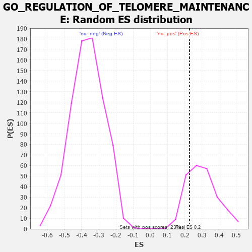

| | | Dataset | 7d |
| Phenotype | NoPhenotypeAvailable |
| Upregulated in class | na_pos |
| GeneSet | GO_REGULATION_OF_TELOMERE_MAINTENANCE |
| Enrichment Score (ES) | 0.22780177 |
| Normalized Enrichment Score (NES) | 0.75841117 |
| Nominal p-value | 0.7887931 |
| FDR q-value | 0.93605673 |
| FWER p-Value | 1.0 |
Table: GSEA Results Summary
 Fig 1: Enrichment plot: GO_REGULATION_OF_TELOMERE_MAINTENANCE
Fig 1: Enrichment plot: GO_REGULATION_OF_TELOMERE_MAINTENANCE
Profile of the Running ES Score & Positions of GeneSet Members on the Rank Ordered List
| PROBE | GENE SYMBOL | GENE_TITLE | RANK IN GENE LIST | RANK METRIC SCORE | RUNNING ES | CORE ENRICHMENT | | 1 | NBN | | | 405 | 0.696 | 0.0093 | Yes |
| 2 | ERCC1 | | | 453 | 0.660 | 0.0605 | Yes |
| 3 | YLPM1 | | | 556 | 0.611 | 0.1006 | Yes |
| 4 | PARN | | | 660 | 0.572 | 0.1371 | Yes |
| 5 | MRE11 | | | 693 | 0.560 | 0.1816 | Yes |
| 6 | HDAC8 | | | 881 | 0.510 | 0.2023 | Yes |
| 7 | SRC | | | 1128 | 0.459 | 0.2110 | Yes |
| 8 | DKC1 | | | 1292 | 0.431 | 0.2278 | Yes |
| 9 | XRCC1 | | | 2287 | 0.262 | 0.1254 | No |
| 10 | XRN1 | | | 2786 | 0.185 | 0.0787 | No |
| 11 | ATR | | | 2800 | 0.183 | 0.0929 | No |
| 12 | RTEL1 | | | 3010 | 0.148 | 0.0795 | No |
| 13 | SMG5 | | | 3285 | 0.108 | 0.0543 | No |
| 14 | MAPK3 | | | 3589 | 0.062 | 0.0215 | No |
| 15 | SMG1 | | | 3843 | 0.021 | -0.0085 | No |
| 16 | NEK2 | | | 3871 | 0.016 | -0.0105 | No |
| 17 | PARP1 | | | 4014 | -0.010 | -0.0275 | No |
| 18 | PINX1 | | | 4515 | -0.097 | -0.0821 | No |
| 19 | PNKP | | | 4572 | -0.111 | -0.0795 | No |
| 20 | ATRX | | | 4929 | -0.184 | -0.1084 | No |
| 21 | XRCC5 | | | 4946 | -0.187 | -0.0942 | No |
| 22 | ATM | | | 5210 | -0.249 | -0.1058 | No |
| 23 | TNKS2 | | | 5239 | -0.254 | -0.0873 | No |
| 24 | RAD50 | | | 5314 | -0.276 | -0.0727 | No |
| 25 | GNL3 | | | 5614 | -0.349 | -0.0802 | No |
| 26 | TNKS | | | 6138 | -0.516 | -0.1013 | No |
| 27 | PIF1 | | | 6604 | -0.713 | -0.0981 | No |
| 28 | NEK7 | | | 7415 | -1.285 | -0.0888 | No |
| 29 | DCP2 | | | 7724 | -1.833 | 0.0311 | No |
Table: GSEA details [plain text format]

Fig 2: GO_REGULATION_OF_TELOMERE_MAINTENANCE: Random ES distribution
Gene set null distribution of ES for GO_REGULATION_OF_TELOMERE_MAINTENANCE